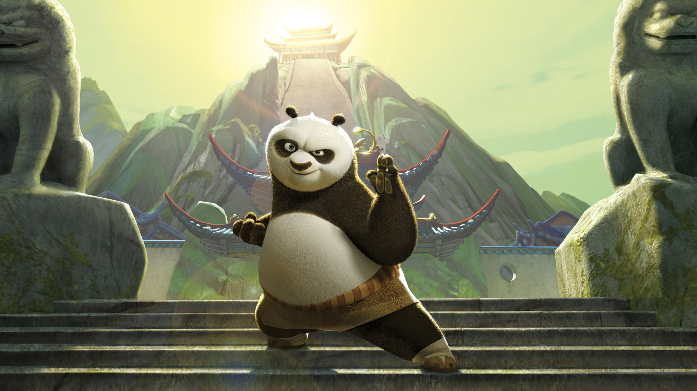
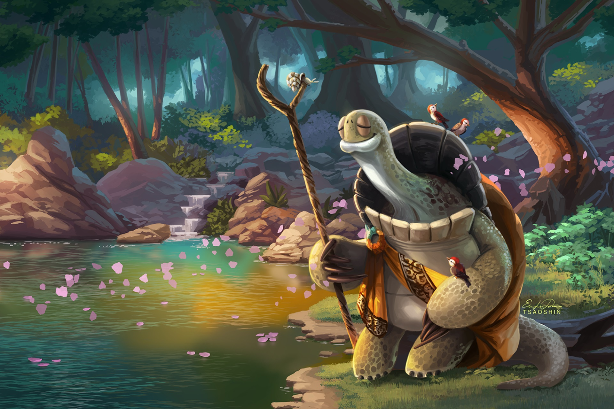
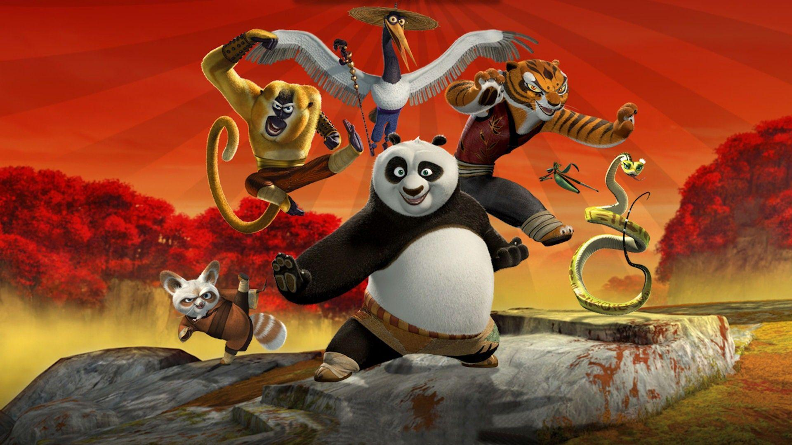
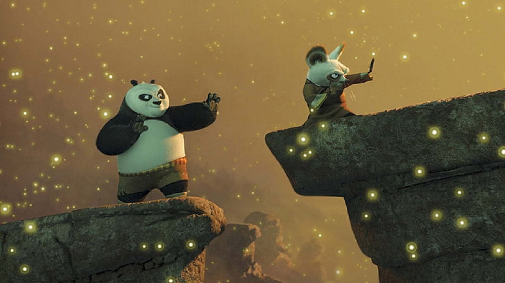

Po é um panda que trabalha na loja de macarrão da sua família e sonha em transformar-se em um mestre de kung fu. Seu sonho se torna realidade quando, inesperadamente, ele deve cumprir uma profecia antiga e estudar a arte marcial com seus ídolos, os Cinco Furiosos.